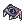
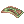
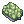
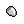
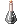

Illegal's PvM Guillotine Cross Guide
| This guide has not been updated in a while. | ||
|---|---|---|
| Information on this page may be obsolete and outdated. Please refer to the author for information on future updates. Reason: "Last update May 2021" |
||
| Guillotine Cross | |||||||||||||||||||
|---|---|---|---|---|---|---|---|---|---|---|---|---|---|---|---|---|---|---|---|
 | |||||||||||||||||||
| Job Base: | Thief, Assassin, Assassin Cross | ||||||||||||||||||
| Written By: | 
illegalKross
| ||||||||||||||||||
| |||||||||||||||||||
Overview
Ahoy, ahoy! illegalKross here!
This guide has been discontinued, meaning no more future updates. You can still find some useful information throughout the guide, but not all the gears are fully up to date anymore. I recommend joining the #thief channel on NovaRO's Discord Server to talk with other GX players.
You can find my more recent guides here.
My personal content (All has NovaRO related content, mostly guides)
Let's go over Guillotine Cross...
Guillotine Cross (GX for short) is the third job of the Assassin class. They are a very versatile class, being able to solo instances, act as main or support DPS in parties, and even tank with the right gears and stats. Though GX can do both PvM and PvP, I will only be covering PvM builds in this guide.
Guillotine Cross is by far my most favorite class, I made one as my first character when I started on NovaRO in 2017 and continue to love it. I personally love how they can solo most instances, do amazing amounts of damage at fast speeds, and the fact that the more I play the class the more I learn about it and the mechanics of Ragnarok Online. If you enjoy playing solo, or at least farming instances solo, like I do, definitely try this class.
If you ever have any questions you can ask me;
- In-game (My main character's name is illegalKross)
- NovaRO Discord Channel (Be sure to join the #thief channel to find other GX's).
- This guide has been tailored to fit NovaRO's Server. Some information won't carry over onto other servers.
- I hope you find this guide helpful and have fun in your journey to poisoning, stabbing, and cutting the world.
Recent Updates
These are the updates within the last 3 months.
March 2021
- Editing has resumed once again :)
- Updated skill descriptions.
- Rolling Cutter gears have been updated. (not cards yet).
Stats
| Stat | Notes |
|---|---|
| Strength | Very important stat for Guillotine Cross, this is your main damage stat.
Every 1 point;
|
| Agility | The most important stat in general for Guillotine Cross, its used in basically every build.
Every 1 point;
Every 5 points;
|
| Vitality | Great stat that increases your tankiness and survivability.
Every 1 point;
Every 2 points;
Every 5 points;
|
| Intelligence | Unnecessary stat scales with nothing you want as a Guillotine Cross.
Every 1 point;
|
| Dexterity | Important to non-Crit builds for Hitting things. Though sometimes Crit builds use it for extra ASPD.
Every 1 point;
Every 5 points;
|
| Luck | Very important for Crit builds, extra stat for other builds. Best to keep it at a multiple of 3 for the most stats.
Every 1 point;
Every 3 points;
Every 5 points;
Every 10 points;
|
Skills
First Job Skills
| Skill | Notes |
|---|---|
 Improve Dodge Improve Dodge
|
|
 Double Attack Double Attack
|
|
| Envenom |
|
 Detoxify Detoxify
|
|
 Hiding Hiding
|
|
| Back Slide |
|
Second/Trans Job Skills
| Skill | Notes |
|---|---|
 Right-hand Mastery Right-hand Mastery |
|
 Katar Mastery Katar Mastery
|
|
 Sonic Blow Sonic Blow
|
|
 Advanced Katar Mastery Advanced Katar Mastery
|
|
 Soul Destroyer Soul Destroyer
|
|
| Meteor Assault |
|
 Cloaking Cloaking
|
|
 Venom Knife Venom Knife
|
|
 Create Deadly Poison Create Deadly Poison
|
|
 Enchant Deadly Poison Enchant Deadly Poison
|
|


Third Job Skills
| Skill | Notes |
|---|---|
 Rolling Cutter Rolling Cutter
|
|
 Cross Ripper Slasher Cross Ripper Slasher
|
|
 Cross Impact Cross Impact
|
|
 Cloaking Exceed Cloaking Exceed
|
|
 Dark Claw Dark Claw
|
|
 Hallucination Walk Hallucination Walk
|
|
 Weapon Blocking Weapon Blocking
|
|
 Counter Slash Counter Slash
|
|
 Venom Impress Venom Impress
|
|
 Research New Poison Research New Poison
|
|
 Poisoning Weapon Poisoning Weapon
|
|
 Venom Pressure Venom Pressure
|
|
 Create New Poison Create New Poison
|
|


Rolling Cutter build
Rolling Cutter is the best build to play if you are new or have a low budget.
What is the goal of Rolling Cutter?
The main goal of this build is to be near immortal and spin until everything around you is dead, then move on to the next group of monsters and repeat. Since you are fighting multiple enemies at once you will be taking a lot of damage, that is why we use "Leech Gears" to sustain ourselves, that way we don't need potions or Arch Bishops to keep our HP and SP up during farming and instances.
It is also the early / midgame build you use before transforming into a more efficient endgame build.
What are Leeching Effects, and what do they do?
Leeching Effects come from equipment like  Rideword Hat [1], and cards like  Hunter Fly Card. These effects can come from some other sources as well such as enchantments and abilities from Pets.
Hunter Fly Card. These effects can come from some other sources as well such as enchantments and abilities from Pets.
Leeching effects give you a chance to restore some HP or SP depending on the amount of damage you did. This allows us to farm almost forever, go into instances without a Priest by our side, and fight most bosses infinitely as long as we don't get one-shot by them.
Here is a video I made on how leech effects work: How Leech Effects Work
Some other tips about Rolling Cutter.
- It is best to start building as much leech effects as possible, then move on to getting 187 ASPD and 35% After Cast Delay, and finally after that focus on damage.
- To get the most DPS out of a Rolling Cutter build, you need 189 ASPD, and 38% After Cast Delay. (Anything higher will not increase your DPS).
- It is good to note that Rolling Cutter damage scales with your Base Level. That means that it will slowly get stronger as you level up.
- If you want an idea of how gear setups would look like, you can check the Rolling Cutter Gear Progression tab, it includes a build for New/budget players as well to help you get started.
Short video on how After Cast Delay works
To get the most out of Rolling Cutter you should use either;
- 187 ASPD and 30% After Cast Delay for 7 spins per second.
- 189 ASPD and 38% After Cast Delay for 8 spins per second.
| After Cast Delay and ASPD caps | ||||||||||||||||||||||||||||||||||||
|---|---|---|---|---|---|---|---|---|---|---|---|---|---|---|---|---|---|---|---|---|---|---|---|---|---|---|---|---|---|---|---|---|---|---|---|---|
|
| Pros | Cons |
|---|---|
|
|
| Rolling Cutter Stats | |||||||||||||||||||||||||||||||||||
|---|---|---|---|---|---|---|---|---|---|---|---|---|---|---|---|---|---|---|---|---|---|---|---|---|---|---|---|---|---|---|---|---|---|---|---|
|
| Rolling Cutter Skill Trees |
|---|


| Rolling Cutter Gears | |||||||||||||||||||||||||||||||||||||||||||||||||||||||||||||||||||||||||||||||||||||||||||||||||||||||||||||||||||||||||||||||||||||||||||||||||||||||||||||
|---|---|---|---|---|---|---|---|---|---|---|---|---|---|---|---|---|---|---|---|---|---|---|---|---|---|---|---|---|---|---|---|---|---|---|---|---|---|---|---|---|---|---|---|---|---|---|---|---|---|---|---|---|---|---|---|---|---|---|---|---|---|---|---|---|---|---|---|---|---|---|---|---|---|---|---|---|---|---|---|---|---|---|---|---|---|---|---|---|---|---|---|---|---|---|---|---|---|---|---|---|---|---|---|---|---|---|---|---|---|---|---|---|---|---|---|---|---|---|---|---|---|---|---|---|---|---|---|---|---|---|---|---|---|---|---|---|---|---|---|---|---|---|---|---|---|---|---|---|---|---|---|---|---|---|---|---|---|
|


| Rolling Cutter Cards | ||||||||||||||||||||||||||||||||||||||||||||||||||||||||||||||||||||||||||||||||||||||||||||||||||||||||||||||||||||||||||||||||||||||||||||||||||||||||||||||
|---|---|---|---|---|---|---|---|---|---|---|---|---|---|---|---|---|---|---|---|---|---|---|---|---|---|---|---|---|---|---|---|---|---|---|---|---|---|---|---|---|---|---|---|---|---|---|---|---|---|---|---|---|---|---|---|---|---|---|---|---|---|---|---|---|---|---|---|---|---|---|---|---|---|---|---|---|---|---|---|---|---|---|---|---|---|---|---|---|---|---|---|---|---|---|---|---|---|---|---|---|---|---|---|---|---|---|---|---|---|---|---|---|---|---|---|---|---|---|---|---|---|---|---|---|---|---|---|---|---|---|---|---|---|---|---|---|---|---|---|---|---|---|---|---|---|---|---|---|---|---|---|---|---|---|---|---|---|---|
|


| Rolling Cutter Pets | ||||||||||||||||||||||||||
|---|---|---|---|---|---|---|---|---|---|---|---|---|---|---|---|---|---|---|---|---|---|---|---|---|---|---|
|


| Rolling Cutter Shadow Gears | ||||||||||||||||||||||||||||||||
|---|---|---|---|---|---|---|---|---|---|---|---|---|---|---|---|---|---|---|---|---|---|---|---|---|---|---|---|---|---|---|---|---|
|


| Rolling Cutter Gear Progression |
|---|
| My new Progression Guide |
Cross Impact build (This build is not up to date)
This build is based around the Cross Impact skill. Your goal is to spam it as much as possible for the best DPS. You will mainly use this for bosses, but it can easily be used as an all purpose build, kinda like the opposite of Rolling Cutter, as our main DPS is single target, but we have access to some AoE.
Since our main damage is single target it's best to use Rolling Cutter to get rid of slave mobs, so you can hit MvP's accurately.
- Cross Impact has 0.7 seconds of Cooldown, and 0.5 seconds of Cast Delay.
These stack together, so the 0.5s of Cast Delay happens at the same time as the Cooldown. So getting After Cast Delay will not increase the amount of Cross Impact you can spam. It will affect casting of other skills while this one is on Cooldown.
Due to a recent rework of this skill it can now apply critical hits, but the Critical Rate is halved. You will need around 210-220 Critical Rate to consistently get critical hits on most enemies.
Since we need such high Critical Rate, using a katar is better than dual wielding in the current meta due to the double Critical Rate that katar class weapons give you.
| Pros |
|---|
- Extremely high single target damage
- Stats are very flexible
- Can apply critical hits
- Very effective in Monster Hunter 2
| Cons |
|---|
- Area of Effect damage is mediocre
- Requires a +10 level 4 weapon and a few Bio5 cards to achieve the high end damage (Though it is still fine to use it without these conditions).
- Has a hard time hitting 210~220 Critical Rate without a katar class weapon.
| Cross Impact Stats |
|---|
|
STR: 100-120
|

| Cross Impact Skill Trees |
|---|
Cross Impact GX Skill TreeRecommended Thief Skill Tree
Recommended Assassin/Assassin Cross Skill TreeRecommended Guillotine Cross Skill Tree |

| Cross Impact Gears | ||||||||||||||||||||||||||||||||||||||||||||||||||||||||||||||||||||||||||||||||||||||||||||||||||||||||||||||||
|---|---|---|---|---|---|---|---|---|---|---|---|---|---|---|---|---|---|---|---|---|---|---|---|---|---|---|---|---|---|---|---|---|---|---|---|---|---|---|---|---|---|---|---|---|---|---|---|---|---|---|---|---|---|---|---|---|---|---|---|---|---|---|---|---|---|---|---|---|---|---|---|---|---|---|---|---|---|---|---|---|---|---|---|---|---|---|---|---|---|---|---|---|---|---|---|---|---|---|---|---|---|---|---|---|---|---|---|---|---|---|---|---|
|


| Cross Impact Cards | |||||||||||||||||||||||||||||||||||||||||||||||||||||||||||||||||||||||||||||||||||||||||||||||||||||
|---|---|---|---|---|---|---|---|---|---|---|---|---|---|---|---|---|---|---|---|---|---|---|---|---|---|---|---|---|---|---|---|---|---|---|---|---|---|---|---|---|---|---|---|---|---|---|---|---|---|---|---|---|---|---|---|---|---|---|---|---|---|---|---|---|---|---|---|---|---|---|---|---|---|---|---|---|---|---|---|---|---|---|---|---|---|---|---|---|---|---|---|---|---|---|---|---|---|---|---|---|---|
|
| Cross Impact Pets | ||||||||||||||||||||||||||
|---|---|---|---|---|---|---|---|---|---|---|---|---|---|---|---|---|---|---|---|---|---|---|---|---|---|---|
|


| Cross Impact Shadow Gears | ||||||||||||||||
|---|---|---|---|---|---|---|---|---|---|---|---|---|---|---|---|---|
|
Soul Destroyer Build (This build is not up to date)
This build is focused around the Soul Destroyer skill. You want to spam and deal Critical attacks for massive amounts of DPS.
Soul Breaker has 2 seconds of Cast Delay, so you will need very high After Cast Delay to spam it fast. (Around 93%, but you can use less to still deal strong damage)
It also has 0.25 seconds of Fixed Cast Time and 0.25 seconds of Variable Cast Time.
- Due to a recent rework of this skill it can now apply critical hits, but the Critical Rate is halved. You will need around 210-220 Critical Rate to consistently get critical hits on most enemies.
- Since we need such high Critical Rate, using a katar while soloing is better than dual wielding in the current meta due to the double Critical Rate that katar class weapons give you. If you are aiming to play in parties, using dual wielding will be stronger.
- Inside Monster Hunter 2, Soul Destroyer can no longer land critical hits. So you can focus more on damage and After Cast Delay.
| Pros |
|---|
- Can be the highest DPS GX build, but needs party support buffs.
- Best party build for GX.
- Can apply critical hits.
- Has high spam rate.
- Very effective in Monster Hunter 2
| Cons |
|---|
- Needs party support to be the best DPS.
- Mediocre AoE damage
- Has a hard time hitting 210~220 Critical Rate without a katar class weapon.
| Soul Destroyer Stats |
|---|
|
STR: 100
|

| Soul Destroyer Skill Trees |
|---|
Soul Breaker Skill TreeRecommended Thief Skill Tree
Recommended Assassin/Assassin Cross Skill Tree
Recommended Guillotine Cross Skill Tree |

| Soul Destroyer Gears | ||||||||||||||||||||||||||||||||||||||||||||||||||||||||||||||||||||||||||||||||||||||||||||||||||||||||||||||||||||||
|---|---|---|---|---|---|---|---|---|---|---|---|---|---|---|---|---|---|---|---|---|---|---|---|---|---|---|---|---|---|---|---|---|---|---|---|---|---|---|---|---|---|---|---|---|---|---|---|---|---|---|---|---|---|---|---|---|---|---|---|---|---|---|---|---|---|---|---|---|---|---|---|---|---|---|---|---|---|---|---|---|---|---|---|---|---|---|---|---|---|---|---|---|---|---|---|---|---|---|---|---|---|---|---|---|---|---|---|---|---|---|---|---|---|---|---|---|---|---|
|


| Soul Destroyer Cards | ||||||||||||||||||||||||||||||||||||||||||||||||||||||||||||||||||||||||||||||||||||||||||||||||||||||||||||||
|---|---|---|---|---|---|---|---|---|---|---|---|---|---|---|---|---|---|---|---|---|---|---|---|---|---|---|---|---|---|---|---|---|---|---|---|---|---|---|---|---|---|---|---|---|---|---|---|---|---|---|---|---|---|---|---|---|---|---|---|---|---|---|---|---|---|---|---|---|---|---|---|---|---|---|---|---|---|---|---|---|---|---|---|---|---|---|---|---|---|---|---|---|---|---|---|---|---|---|---|---|---|---|---|---|---|---|---|---|---|---|
|

| Soul Destroyer Pets | ||||||||||||||||||||||||||
|---|---|---|---|---|---|---|---|---|---|---|---|---|---|---|---|---|---|---|---|---|---|---|---|---|---|---|
|
| Soul Destroyer Shadow Gears | ||||||||||||||||||||||||
|---|---|---|---|---|---|---|---|---|---|---|---|---|---|---|---|---|---|---|---|---|---|---|---|---|
|
Counter Slash build (This build is not up to date)
NOTE: This build isn't in the greatest state at the moment, similar to autoattack crit, it lacks DPS compared to the other GX builds. It can still be used to melt most MvPs but it's just not as efficient as the other GX builds now.
Counter Slash is an expensive endgame build for melting MvPs in seconds.
The goal of this build is to use Weapon Blocking and letting it get activated giving you a 10 second stance to use Counter Slash. Then you stand beside an MvP and spam Counter Slash 7 times a second, doing millions of damage VERY quickly.
In this build you need 93% After Cast Delay, and 187 ASPD for the full 7 skills a second.
You can use most of the same gears from Rolling Cutter build, so if you built that first, this won't be as expensive to pursue.
Another piece of useful information, Counter Slash completely pierces defense as part of the skill's effect.
| Pros |
|---|
- Absurdly high AoE damage
- Decent build for Monster Hunter 2
| Cons |
|---|
- Expensive to build
- Needs most of its gears to really start using it
- Weapon Blocking can lock you in place
- Hard to use on normal mobs, due to knockback
| Counter Slash Stats |
|---|
|
STR: 100-120
|
| Counter Slash Skill Tree |
|---|
Counter Slash GX Skill TreeRecommended Thief Skill Tree
Recommended Assassin/Assassin Cross Skill Tree
Recommended Guillotine Cross Skill Tree |

| Counter Slash Gears | ||||||||||||||||||||||||||||||||||||||||||||||||||||||||||||||||||||||||||||||||||
|---|---|---|---|---|---|---|---|---|---|---|---|---|---|---|---|---|---|---|---|---|---|---|---|---|---|---|---|---|---|---|---|---|---|---|---|---|---|---|---|---|---|---|---|---|---|---|---|---|---|---|---|---|---|---|---|---|---|---|---|---|---|---|---|---|---|---|---|---|---|---|---|---|---|---|---|---|---|---|---|---|---|---|
|


| Counter Slash Cards | |||||||||||||||||||||||||||||||||||||||||||||||||||||||||||||||||||||||||||||||||||||||||||||||||||||||||||
|---|---|---|---|---|---|---|---|---|---|---|---|---|---|---|---|---|---|---|---|---|---|---|---|---|---|---|---|---|---|---|---|---|---|---|---|---|---|---|---|---|---|---|---|---|---|---|---|---|---|---|---|---|---|---|---|---|---|---|---|---|---|---|---|---|---|---|---|---|---|---|---|---|---|---|---|---|---|---|---|---|---|---|---|---|---|---|---|---|---|---|---|---|---|---|---|---|---|---|---|---|---|---|---|---|---|---|---|
|

| Counter Slash Pets | ||||||||||||||||||||
|---|---|---|---|---|---|---|---|---|---|---|---|---|---|---|---|---|---|---|---|---|
|
| Counter Slash Shadow Gears | ||||||||||||||||
|---|---|---|---|---|---|---|---|---|---|---|---|---|---|---|---|---|
|
Autoattack Critical Build (This build is not up to date)
- This is an endgame build meant for killing tough and high flee MvP's as quickly as possible, it is NOT recommended to build this as a newbie or on a low budget. You should farm a decent pool of zeny first.
NOTE: This build isn't in the greatest state at the moment, it lacks DPS compared to the other GX builds. This build is still fine to play, but it's mostly for nostalgia until we get further buffs to this build. If you REALLY want a strong Autoattack critical build, I would suggest Rune Knight in this meta.
- The goal of this build is to kill a single target as quickly as possible. (Which is usually an MvP). You want to get a lot of Critical Damage % to deal the highest damage that you can. And have 193 ASPD to attack as fast as you can.
| Pros |
|---|
- High single target damage
- Can hit high flee mobs / never misses
| Cons |
|---|
- Area of Effect damage is mediocre
- Expensive to build
- Needs a good chunk of gears to be able to start using it
| Autoattack Critical Stat Build |
|---|
|
STR: 110-125
|
| Autoattack Critical Skill Trees |
|---|
Autoattack Critical GX Skill TreeRecommended Thief Skill Tree
Recommended Assassin/Assassin Cross Skill TreeRecommended Guillotine Cross Skill Tree |
| Autoattack Critical Gears | |||||||||||||||||||||||||||||||||||||||||||||||||||||||||||||||||||||||||||||||||||||||||||||||||||||||||||||
|---|---|---|---|---|---|---|---|---|---|---|---|---|---|---|---|---|---|---|---|---|---|---|---|---|---|---|---|---|---|---|---|---|---|---|---|---|---|---|---|---|---|---|---|---|---|---|---|---|---|---|---|---|---|---|---|---|---|---|---|---|---|---|---|---|---|---|---|---|---|---|---|---|---|---|---|---|---|---|---|---|---|---|---|---|---|---|---|---|---|---|---|---|---|---|---|---|---|---|---|---|---|---|---|---|---|---|---|---|---|
|


| Autoattack Critical Cards | ||||||||||||||||||||||||||||||||||||||||||||||||||||||||||||||||||||||||||||||||||||||||||||||||||||||||
|---|---|---|---|---|---|---|---|---|---|---|---|---|---|---|---|---|---|---|---|---|---|---|---|---|---|---|---|---|---|---|---|---|---|---|---|---|---|---|---|---|---|---|---|---|---|---|---|---|---|---|---|---|---|---|---|---|---|---|---|---|---|---|---|---|---|---|---|---|---|---|---|---|---|---|---|---|---|---|---|---|---|---|---|---|---|---|---|---|---|---|---|---|---|---|---|---|---|---|---|---|---|---|---|---|
|
| Autoattack Critical Pets | ||||||||||||||||||||||||||
|---|---|---|---|---|---|---|---|---|---|---|---|---|---|---|---|---|---|---|---|---|---|---|---|---|---|---|
|
| Autoattacking Shadow Gears | ||||||||||||||||
|---|---|---|---|---|---|---|---|---|---|---|---|---|---|---|---|---|
|
Useful GX Information
Leeching Info
- The more leeching effects you have the stronger it is.
- For instance, if you had;
| Item | Chance to Leech | Amount it Leeches |
|---|---|---|
 Succubus Pet Succubus Pet
|
3% Chance | 5% of damage as HP |
| Rideword Hat | 5% Chance | 8% of damage as HP |
 Hunter Fly Card Hunter Fly Card
|
3% Chance | 15% of damage as HP |
| Succubus Pet + Rideword Hat + Hunter Fly Card
|
11% Chance | 28% of damage as HP |
This works the same way for SP leeching.
New Poisons
New Poisons are very useful tools for the GX class. They give a negative effect when applied to an enemy, and a positive effect when used on yourself.
All New Poisons will give you a 5% increase in Melee damage when applied.
All of these poisons last for 5 minutes or 300 seconds each.
| Poison | Ingredients | Negative Effect | Positive Effect |
|---|---|---|---|
 Paralysis Paralysis
|
 1 Medicine Bowl 1 Medicine Bowl 1 Poison Kit 1 Poison Kit 20 Poisonous Toad Skins  1 Poison Herb Amoena 1 Poison Herb Amoena
|
Useful for potentially slowing down people in PvP enviroments, especially on tanky enemies.
|
Gives you Increase AGI movement speed. Does not stack.
|
 Pyrexia Pyrexia
|
1 Medicine Bowl 1 Poison Kit  20 Anolian Skin  1 Poison Herb Rantana 1 Poison Herb Rantana
|
Can cause interruptions in PvP for casting skills.
|
The best poison for critical builds, this is what you will be using most of the time. "Normal Damage" refers to autoattack damage only, not general damage.
|
 Death Hurt Death Hurt
|
1 Medicine Bowl 1 Poison Kit  25 Decayed Nail  1 Poison Herb Seratum 1 Poison Herb Seratum
|
Can be used on a tank or high HP enemy to slow their healing making it easier to kill them. Stacks with Critical Wounds.
|
A nice potion to recover health on solo instances, just find a safe area and heal to full health when you need it.
|
 Leech End Leech End
|
1 Medicine Bowl 1 Poison Kit 1 Poison Herb Scopolia 1 Poison Herb Scopolia 1 Poison Herb Nerium 1 Poison Herb Nerium
|
Good for killing targets slowly, does not work on MvPs.
|
In my opinion, the worst potion, we have 100 Vit for stun immunity anyways, and blind is easily removed with a green potion.
|
 Antidote Antidote
|
1 Medicine Bowl 1 Poison Kit 2 Green Herb 2 Green Herb 1 Blue Herb 1 Blue Herb 1 WHite Herb 1 WHite Herb
|
Removes the effects of a New Poison. | Not Applicable. |
 Venom Bleed Venom Bleed
|
1 Medicine Bowl 1 Poison Kit} 10 Sticky Poison 10 Sticky Poison 1 Izidor 1 Izidor
|
Can be used on tanks or high HP enemies to take them down easier.
|
A very nice poison against pesky reflect mobs, and in PvP where there is a lot of reflect.
|
|  Magic Mushroom | 1 Medicine Bowl 1 Poison Kit 10 Poison Spore 10 Poison Spore 1 Poison Herb Makulata 1 Poison Herb Makulata
|
Can be used to interupt a targets tasks and skills, making it harder for them to move and fight.
|
Another really strong poison, this can really help Cross Ripper Slash, Counter Slash, and Soul Breaker builds reach high After Cast Delay.
|
 Toxin Toxin
|
1 Medicine Bowl 1 Poison Kit 10 Sticky Poison 1 Poison Herb Nerium
|
Good on classes that cast a lot of skills to try and interrupt them. This can "apparently" stop uninterruptible casting.
|
Similar to Death Hurt, but this recovers SP. Really nice when you farming in a field or dungeon and need lots of SP.
|
 Oblivion Curse Oblivion Curse
|
1 Medicine Bowl 1 Poison Kit 10 Heart of Mermaid 1 Izidor 10 Heart of Mermaid 1 Izidor
|
Good on classes that cast dangerous skills to prevent them from killing you. (If they get oblivion status, sadly it's like a 5% chance on high INT characters).
|
Decent poison that can help again bosses that spam Silence and Curse statuses.
|
List of Foods/Buffs
THIS TABLE IS A WORK IN PROGRESS, WILL BE DONE EVENTUALLY
| Item | Where to Obtain | Buff Type | Effect |
|---|---|---|---|
 Shiny Marinade Beef Shiny Marinade Beef Chile Shrimp Gratin Chile Shrimp Gratin Awfully Bitter Bracer Awfully Bitter Bracer Red Mushroom Wine Red Mushroom Wine Peach Cake Peach Cake Lucky Soup Lucky Soup
|
Sara's Memories | Various Stats | +6 STR +6 AGI +6 VIT +6 INT +6 DEX +6 LUK |
 Enrich Celermine Juice Enrich Celermine Juice
|
Genetic Special Pharmacy Skill | ASPD | +10% ASPD |
 Awakening Potion Awakening Potion
|
Tool Dealer | ASPD | +10% ASPD |
 Guarana Candy Guarana Candy
|
[Quest] | AGI | Casts level 5 Increase Agility and concentration potion. |
 Drosera Herb Stew Drosera Herb Stew
|
Genetic Mixed Cooking Skill | AGI | Adds +20 Agi for 5 mintutes. |
 Buche De Noel Buche De Noel
|
Drops with  Polar Bear Cap [1] Polar Bear Cap [1]
|
CRIT | Increases HP and SP restoration by 3%, and gives +3 Hit and +7 Crit for 10 minutes. |
 Abrasive Abrasive
|
Cash Shop | CRIT | +30 Crit for 5 minutes. |
Newbie Leveling Guide
Lv 1 - Lv 11
- Walk into the portal in the centre of the gears. Choose "Wake Up". Wait for Mom to wake you up, then follow the directions she tells you. After you go downstairs follow the red arrows and talk to Mom for the next instructions.
- You are told to clear the vermin from the basement, add your stat points to Dex for an easy time clearing them, you'll need Dex later anyways.
Lv 11 - Lv 16
- After clearing the vermin set your Basic skill to level 9 (Alt + S), and spend all your stat points (in Str and Dex preferably), then follow the red arrows back to Mom.
- After Mom tells you about your dad, follow the red arrows back to the basement. Choose "Dagger (Thief)", then head back up to Mom.
- Head outside, then follow the red arrows to the main office, talk to the Job Master, he is behind the left counter next to the entrance, choose "Thief Class". You are now a Thief.
- Now go outside and talk to the warper near the fountain, warp to Payon Dungeon (Warper > Dungeons > Payon Dungeon). Kill Zombies (You can kill other monsters too, these are just the easiest to start with) until you are level 26.
Lv 26 - Lv 34
- Go to Eden (@go Eden) and take Instructor Boya's Eden Equipment Quest. She's standing behind the counter.
- Talk to the Eden Group Member outside of Payon Cave before you start hunting Skeletons and Poporings. When you've completed them, report to the Eden Group Member, then to Instructor Boya. You will receive your first set of Eden Equipment from Administrator Michael in the back-right-room behind the large Blue Door in Eden.
Lv 34 - Lv 40
- Equip your new gears and head to Payon Dungeon Floor 2, kill Archer Skeleton and Soldier Skeleton until you are level 40.
Lv 40 - Lv 59
- Take the next quest from Instructor Boya's Eden Equipment Quest now.
- Go to Orc Dungeon, then talk to the Eden Group Member outside of Orc Dungeon before you start hunting Orc Baby's and Orc Warriors. (Be sure to use Enchant Poison for extra damage against the Orc's) When you've completed them, report to the Eden Group Member then to instructor Boya. You will receive your second set of Eden Equipment from Administrator Michael in the room behind the Blue Door.
- As soon as you hit job Level 40, go back to the job changer and become an Assassin. (You won't need max job level thief until AFTER you rebirth)
Lv 60 - 69
- Talk to Ur and get the quest from Instructor Ur's Eden Equipment Quest.
- Go to Comodo (@go Comodo), then talk to the Romeo just outside of Beach Dungeon 2 before you start hunting Stalactic Golems.
- When you've completed the quest, report to Romeo then to instructor Ur. You will receive your last set of Eden Equipment from Blacksmith Thorn in the room behind the Blue Door. (I suggest choosing Katar as your weapon, as its the better option).
Lv 70 - Lv 79
- Take the last quest from Instructor Ur's Eden Equipment Quest.
- Go to Glast Heim St Abbey. Talk to the Eden Group Member outside of Glast Heim Churchyard before you start hunting Wraiths and Evil Druids. When you've completed them, report to the Eden Group Member then to instructor Ur. You will be able to enchant your weapon at Weapons Expert (he stands next to Blacksith Thorn).
Lv 85 - Lv 114
- This us the level range to join the first gramps quest. Talk to the board in the top left of Eden to get the quests, then talk to gramps (Old man beside the board) to enter the farming maps.
- Be sure to join a "85+ Gramps party" to farm monsters here, as its the fastest way. Note that your main role will be luring monsters for the rest of the party to kill.
- Gramps quests are rotated at the start of every month. You can also hunt them outside of the Gramps map. Use the
@whereis (monster name)command to find out where a monster spawns. You can find gramps parties at the main eden area or on #lfg channel.
Rebirth - Guillotine Cross
- After you finish the gramps quests, DO NOT TURN THEM IN. Instead rebirth at the jop changer and become a High Thief, then go do the Cautious Village Quest.
- Now you will be a max job level High Thief. Go back to the Job Master and change to Assassin Cross, now turn in your gramps quests and ta-da, your now level 99/job level 69, now go do a little more gramps for that last job level and turn into a Guillotine Cross.
Lv 100+
Lv 100
- Minimum level to access Sara's Memory. I suggest doing this instance every day, it gives free +6 stat foods, only take 5-10 minutes, and is super easy. It also gives decent Exp at lower levels.
- Minimum level to access Friday easy mode.
Lv 115 - Lv 144
- Level range to join the second bracket of Gramps quests, once again its best to lure monsters for the rest of the party to kill.
Lv 120
- Minimum level to access Nightmarish Jitterbug
- Minimum level to access Ghost Palace.
- At this level you can start using Thanatos Katar.
Lv 125
- Minimum level to access Airship Assault.
Lv 130
- Minimum level to access Old Glast Heim Normal Mode.
- Minimum level to access Charleston Crisis.
Lv 140
- Minimum level to access Horror Toy Factory.
- Minimum level to access Central Laboratory.
- Minimum level to access Malangdo Culvert.
- Minimum level to do Dimensional Travel. This is a pre-requisite quest to access Bios Island.
Lv 145 - Lv 175
- Level range to join the third bracket of Gramps quests, once again, best to lure for the rest of the party. Unless you want to try and solo from this point.
Lv 145
- Minimum level to access Sarah and Fenrir.
Lv 160
- Minimum level to access Bios Island.
- Minimum level to access Morse Cave.
- Minimum level to access Temple of the Demon God.
- Minimum level to access Monster Hunter.
- Minimum level to access Friday hard mode.
- Recommended level to try Old Glast Heim Hard Mode if you have not done so at this point. For soloing try to just clear up to the Root of Corruption.
Lv 175+
- Level range to join the last gramps area, this is much harder than the other brackets, but sometimes we can solo here (depends on monsters).
- At this point I recommend just doing as many instances and MvP's as possible to level up, as it gets really slow at this point.
Advanced Leveling Guide
This guide is for those who have money to spare and are just trying to level as fast as possible.
- Do the quests for Mom for the easy exp.
- Go to the main office and become a Thief.
- Buy a
 Scaraba Summoning Scroll, and a handful of
Scaraba Summoning Scroll, and a handful of  Fly Wing's.
Fly Wing's.
- You can also buy a Field Manual to speed up the leveling process.
- Then go to
@go rock ridge, and walk right to go to Rock Ridge field. Let your scaraba kill shotgun buffalo bandits, Beware not to get targeted or hit by any mob, you will die in 1 hit. If you do get targeted use a Fly Wing immediately. - Change to assassin when your job level is 40, then come back to the field.
- When you become level 99/50, go rebirth.
- Kill a couple porings in Hidden Dungeon entrance to get enough job levels to change to High Thief.
- Go back to rock ridge field again, all the way back to level 99/70. This time change to assassin cross at job level 50.
- Continue killing bandits until level 110~120
- From now on you will need some gear to be able to level through it fast.
- Go to
@go Verus, and enter the north portal. - Kill robots until level 150 and/or do eden board quests.
- At level 150 go to illusion Dungeon Abyss, kill Ominous Solider and Ominous Permeter until level 160.
- At level 160 do the illusion Dungeon Luanda quests and kill mobs there until ~170.
- After this point you can join gramps, or do instances. This is the end of the speed leveling.